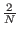
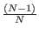
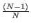
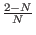
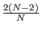
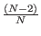

Next: Corollary 1.1
Up: Proof that Algorithm Increases
Previous: Proof that Algorithm Increases
Contents
Theorem 1: Given the state vector of our register with one state with
amplitude k, and every other state with amplitude l, after an
application of A:
- the amplitude in the one state is
k' =  - 1
 k + 2l
k + 2l
- the amplitude of the remaining (N - 1) states is
l' = k + l
Proof: Given the definition of A as
Aij = 2/N if
i  j
and
Aii = - 1 + 2/N, it follows from the definition of matrix
multiplication of k and l by A that:
j
and
Aii = - 1 + 2/N, it follows from the definition of matrix
multiplication of k and l by A that:
-
k' = - 1k + 2l
-
l' = l + k + l
The second expression simplifies to
l' = k + l with some simple algebraic
manipulation. [Grover96]
Next: Corollary 1.1
Up: Proof that Algorithm Increases
Previous: Proof that Algorithm Increases
Contents
Matthew Hayward - Quantum Computing and Grover's Algorithm GitHub Repository